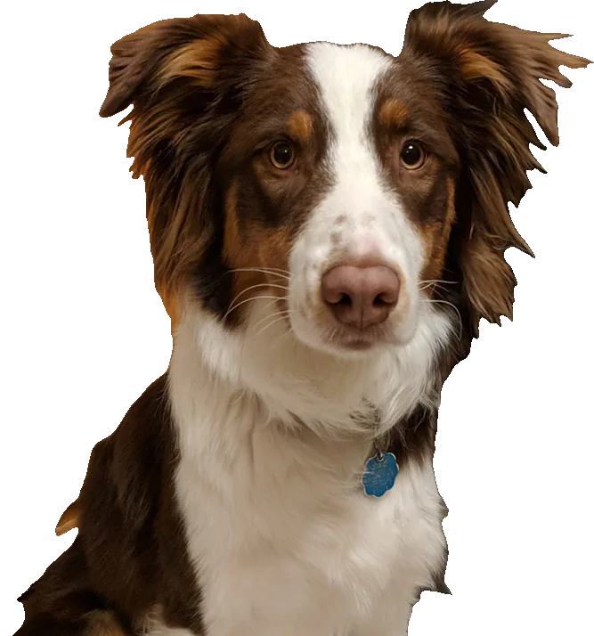
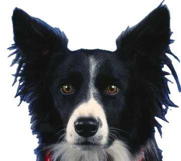
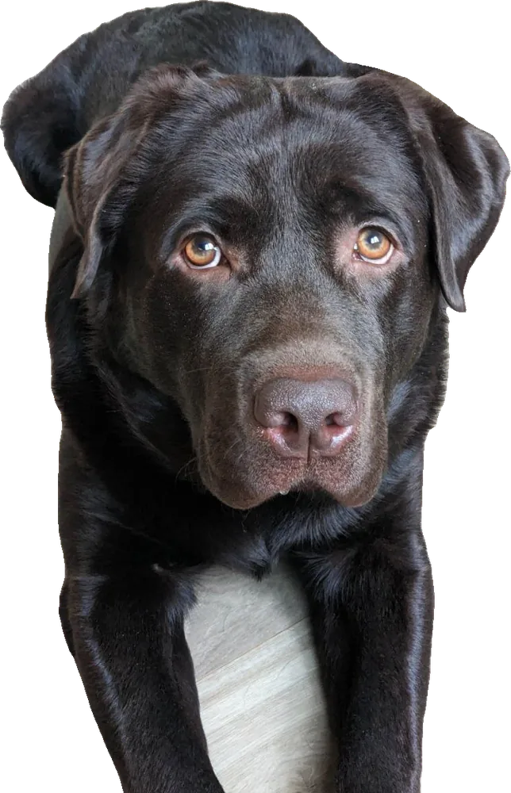
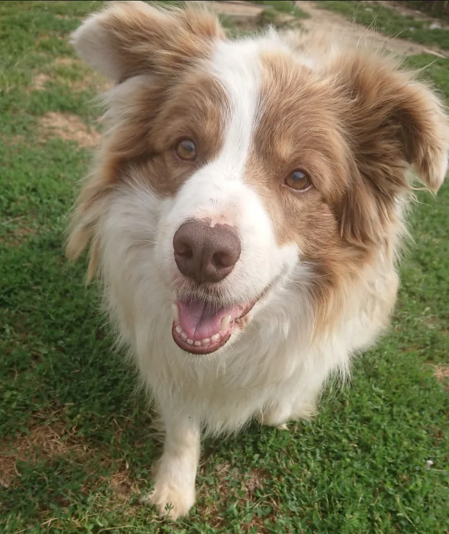

01.
70 % carne fresca y cero conservantes.
Raciones a medida, en tu puerta.

En Kibory cocinamos como lo harías tú si tuvieras tiempo: carne fresca, verduras de verdad y cero atajos. Menús a medida para que tu perro viva más años, con más ganas.

Cinco menús cocinados a baja temperatura y servidos en raciones a la medida de tu perro.
Ver todasNada que no puedas pronunciar. Todo lo que su
cuerpo necesita.
Proteína magra de granjas locales. Nunca harinas ni subproductos.
Omega 3 para un pelo que brilla y unas articulaciones que aguantan paseos largos.
Fibra y energía de liberación lenta para una digestión tranquila.
Betacaroteno para la vista y las defensas.
Proteína vegetal, fibra y minerales para cada etapa.
Antioxidantes naturales, sin azúcares añadidos.
antes de pasar por el fuego

Raciones a medida que llegan a casa listas para servir. Tu perro solo tiene que vaciar el cuenco; tú, disfrutar de verle con energía.
Recetas con carne fresca y verduras de temporada que se comen con ganas desde el primer día.

Cuéntanos su raza, edad y peso: calculamos la ración exacta y te la llevamos a casa en 48 h. Sin permanencia, pausa cuando quieras.
¡sin letra pequeña!